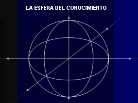

La Metodología Compleja, también llamada Trialéctica,
constituye una herramienta de trabajo utilizable en cualquier tipo de actividad que realice el hombre, tal como sucede con algún otro método operativo (Planificación, Administración, Control, Investigación, Evaluación, Producción etc.). La metodología compleja es integralista, porque deriva de una teoría universal que tiende a explicar la realidad como un todo. Es decir, que incluye al hombre, pero considerando, además, todo lo infinitamente grande (el cosmos) como lo infinitamente pequeño (el microcosmo).
La Metodología Compleja, también llamada Trialéctica,
constituye una herramienta de trabajo utilizable en cualquier tipo de actividad que realice el hombre, tal como sucede con algún otro método operativo (Planificación, Administración, Control, Investigación, Evaluación, Producción etc.). La metodología compleja es integralista, porque deriva de una teoría universal que tiende a explicar la realidad como un todo. Es decir, que incluye al hombre, pero considerando, además, todo lo infinitamente grande (el cosmos) como lo infinitamente pequeño (el microcosmo).
La metodología compleja se rige por leyes universales, aplicables tanto a los seres vivos como a la materia inorgánica. Esas leyes están agrupadas en la sistemática (ciencia de la clasificación). Por su alcance se puede considerar a la metodología compleja como un “Sistema de Sistemas”, o sea un sistema integrado que comparte algunas coincidencias con la teoría de sistemas, la teoría de la información, la teoría administrativa y la teoría del conocimiento; lo cual convierte a la metodología compleja en una envolvente que le proporciona un carácter de proposición original dentro del campo filosófico y científico. En efecto, al incursionar en la “tecnología conceptual”, permite analizar metodológicamente los “conceptos” utilizados en todo proceso, así como la inclusión de la energía y la información como dos hechos que se dan en forma simultánea en esos mismos procesos, conjuntamente con el tiempo y el espacio. Esa tríada se considera como recursos en la etapa de planificación y como dimensiones en el proceso de evaluar los resultados. Estudiándose en forma contínua la relación causa-efecto u objetivo-resultados como secuencia verdaderamente existencial.
La metodología compleja tiene como basamento filosófico y doctrinario la evaluación continua que facilita mejorar y optimizar los procesos para incrementar la calidad de vida del hombre como ser social. Ello permite atacar la tendencia al desorden, a la entropía y al caos que en forma acelerada se observa en nuestro devenir histórico de hoy.
Representación gráfica del modelo metodológico:
La metodología compleja es una herramienta de trabajo que permite planificar, ejecutar, controlar y evaluar y ajustar todo proceso. Para ello debe tener definido un objetivo o meta por alcanzar, por lo que surge una tendencia en el tiempo y el espacio hacia ese logro.
 Usando la metodología compleja, todo proceso es representable gráficamente, porque existe una sistemática de referencia lógico-geométrica-matemática; lo que nos permite visualizar mejor cualquier fenómeno complejo. Para realizar esa graficación, el tiempo, con su tendencia al logro de un objetivo, se representa con una flecha que se orienta hacia la consecución del objetivo propuesto y ubicada en el espacio. Dado que es una representación tridimensional de ese espacio, éste tendrá tres dimensiones físicas: ancho, alto y largo, las cuales pueden ser consideradas como tres planos contenidos dentro de una esfera, siendo el plano transversal el ancho, el plano longitudinal el alto y el plano horizontal el largo de esa esfera.
Como hemos dicho todo proceso tiende a avanzar en el tiempo hacia un objetivo. La esfera, con los planos indicados, al avanzar hacia ese objetivo perseguido, generará sucesivas esferas que se incrementarán si les ingresa energía-información adicionales a las contenidas en su inicio, se mantendrán iguales si no les ingresa energía-información adicional y disminuirán si se les reduce la energía-información con respecto a su inicio. Si la esfera avanza en el tiempo incrementando su dimensión, tomando sólo los planos transversales de cada una de esas esferas sucesivas, se formará un cilindro cuyo eje representará al tiempo.
De acuerdo a una ley fundamental de la sistemática, la metodología compleja considera que todo proceso natural tiende a ampliar su información y a lograr cada vez mejores resultados, debido a la optimización que se obtenga de todos los recursos disponibles; por lo que se dice que se han logrado los objetivos por medio de la “eficiencia por sistema”. Gráficamente esta consideración se traduce en una progresiva ampliación de las esferas, y por ende de sus planos transversales, a medida que avanza en el tiempo-espacio; por tal razón el cilindro inicial tenderá a formar un cono con su base cada vez mayor y, por consiguiente, hacia la conversión del proceso natural en sistema integrado.

De acuerdo a una ley fundamental de la sistemática, la metodología compleja considera que todo proceso natural tiende a ampliar su información y a lograr cada vez mejores resultados, debido a la optimización que se obtenga de todos los recursos disponibles; por lo que se dice que se han logrado los objetivos por medio de la “eficiencia por sistema”. Gráficamente esta consideración se traduce en una progresiva ampliación de las esferas, y por ende de sus planos transversales, a medida que avanza en el tiempo-espacio; por tal razón el cilindro inicial tenderá a formar un cono con su base cada vez mayor y, por consiguiente, hacia la conversión del proceso natural en sistema integrado.
Esa expansión en el tiempo se logra, en la realidad. gracias a la existencia en todo proceso de una dimensión adicional al espacio y al tiempo. Ese elemento adicional lo conforma la energía que opera e impulsa el proceso y la correlativa información que permite identificar, cuantificar y calificar los recursos y los procedimientos, en forma simultánea e indivisible.
Esta energía-información, así concebida, que activa el proceso, se acumula progresivamente a medida que transcurre el tiempo, pero sólo en el caso que voluntariamente se provoque ese crecimiento (gráficamente representado por la expansión del cono ya indicado). Si no se produce el crecimiento indicado del cono, no se lograrán los mejores resultados en un tiempo menor, o sea que no se ha logrado la optimización de los recursos. En ese gráfico el sistema energía-información se representa por medio de dos vectores de igual dimensión y sentido contrario, por lo que se equilibran. La información gira en el sentido de las agujas del reloj, dentro de la dinámica sociopolítica y la energía gira en el sentido contrario a las agujas del reloj, dentro de la dinámica socioeconómica. Ambos vectores corresponden al diámetro de los planos transversales, los cuales aumentan de longitud al avanzar en el tiempo, si se están consiguiendo los objetivos perseguidos.
El sistema energía-información, que corresponde simultáneamente a los recursos disponibles, como actividad real (energía) y a la calificación que se haga de ellos como un medio para su análisis y cuantificación (información), al actuar sobre el proceso, conjuntamente con el movimiento en el tiempo y el espacio, hacia el objetivo, así como la incidencia del medio externo al proceso, generará un movimiento en espiral alrededor del eje tomado como representación del tiempo-espacio. Este movimiento circular, tanto en el sentido de las agujas del reloj como a la inversa, como se dijo antes, corresponde a otra de las leyes fundamentales que rigen a la metodología compleja, como es la existencia en todo proceso de dos transferencias que se producen en forma simultánea y que deben ser de igual valor para que los resultados sean coherentes y produzcan bienestar igual para todas las personas involucradas o no en ese proceso.
Una primera transferencia, en el sentido de las agujas del reloj, es la que está ligada íntimamente con el saber del hombre; por ello, alcanza a toda conceptualización relacionada con el saber, tales como el pensamiento y la noción de poder, y a los sectores de la educación, promoción, planificación, políticas y normativas, que se identifican como sociopolíticos, por cuanto relacionan al hombre, como individuo y como grupo social, con dichos sectores desde el punto de vista más intelectual que material.
Una segunda transferencia, en sentido contrario a las agujas del reloj, comprende las acciones y actividades ligadas al hacer del hombre, por lo tanto, se relaciona con toda la acción de actuar, del usar, de las cosas del poseer, así como a los sectores de actividades referentes a salud, economía y finanzas, comercio y producción, infraestructura y mantenimiento, ecología y administración. Todos los cuales podemos incluirlos dentro de la denominación socioeconómica, por referirse al hombre como individuo o grupo social y a los sectores ligados al hacer desde el punto de vista de actividad material en una mayor proporción que a la actividad intelectual.
Una tercera transferencia, que comprende a las dos anteriores, se deriva al relacionarse e integrarse entre si, al ponerse en acción el proceso del que se trate. Ésta produce transferencias en forma de integrantes o sea transferencias secuenciales. Esto lo constatamos en la vida real al comprobar que ninguna actividad u oficio se puede realizar sin antes conocerlo. Bien porque se cumpla el ciclo generado en la dinámica sociopolítica de saber hacer saber (enseñanza académica) o bien porque se cumpla el ciclo generado en la dinámica socioeconómica de hacer saber hacer (enseñanza práctica).

Las tres relaciones antes descritas producen síntesis social. Como resultado de esta triple relación, se puede apreciar, también, la integración en la descripción que se ha hecho entre el espacio, tiempo y energía-información. La metodología compleja se denomina igualmente Trialéctica, considerándose como una envolvente gnoseológica de la tradicional dialéctica de Engel y Marx.
Resumiendo podemos indicar que gráficamente todo proceso se puede representar como un cono en revolución, en dirección a la consecución de un objetivo, con tendencia a la expansión; generada ésta por dos transferencias de trayectorias contrarias en forma de espiral que contrastan (saber y hacer) y derivan una tercera relación que produce síntesis. Para efectos prácticos la representación gráfica del método sólo se indica la superficie externa del cono de revolución en expansión, excluyéndose los planos de las esferas sucesivas y las dos espirales de las transferencias descritas.